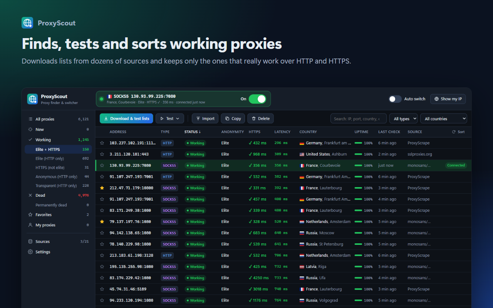
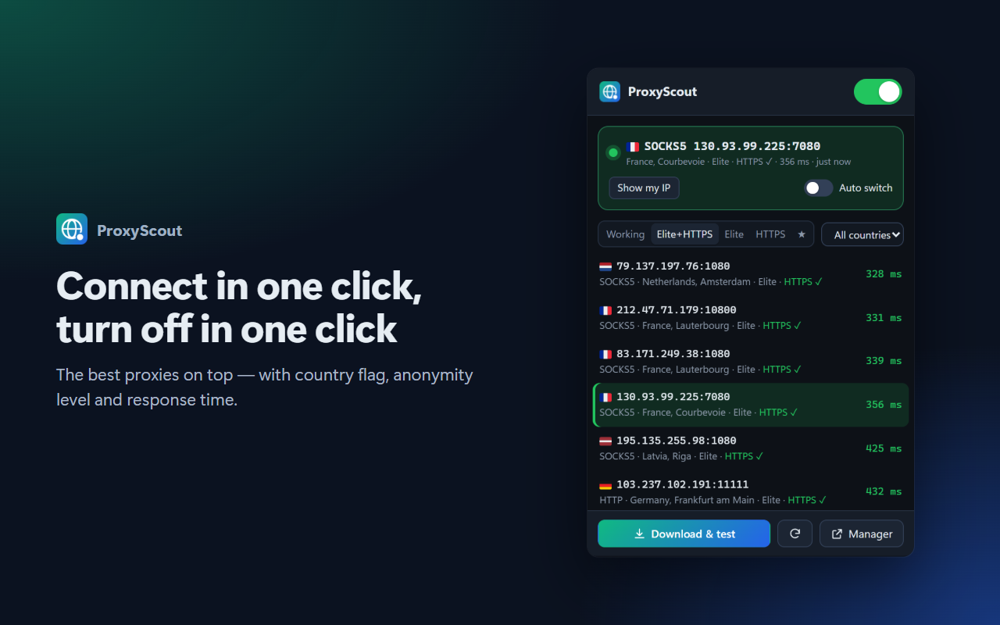
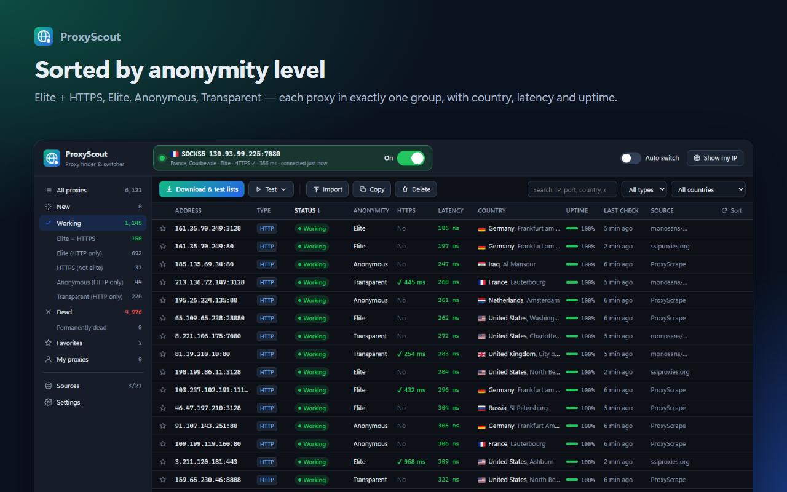

ProxyScout — Proxy Finder & Switcher
A free, open-source browser extension for Chrome and Edge. It downloads free proxy lists from dozens of sources, really tests every proxy and routes your browser through a working one in one click. One more click turns it off.

What it does
Finds working proxies
21 built-in sources plus your own list URLs. Every proxy is tested over HTTP and with two HTTPS connections, so only proxies that load real websites are kept.
Sorted by anonymity
Elite + HTTPS, Elite, HTTPS, Anonymous and Transparent groups, with country flag, city, latency and uptime.
One-click connect
Connect from the popup, turn it off with one switch. The toolbar icon shows the state, and auto switch moves to the best proxy if the current one dies.
Same list everywhere
Optional sync through your browser account or your own Google Drive, so the list you built shows up in all your browsers.
Screenshots


Google sign-in and your data
Signing in with Google is optional and only used for Google Drive sync. When you click “Sign in with Google”, ProxyScout asks for:
drive.appdata— to save one sync file (working proxies, favorites, your own proxies, source choices and settings) in a hidden app folder in your Google Drive. The extension cannot see any other Drive files.emailandopenid— only to show which Google account is connected.
The developer runs no servers and never receives this data. It is used only for sync, is not shared, sold or used for advertising, and you can disconnect at any time. Use of Google user data complies with the Google API Services User Data Policy, including the Limited Use requirements. Details: Privacy policy.
Free public proxies are run by third parties and are not trustworthy. While connected they can see or modify unencrypted (http://) traffic. Do not use them for logins or sensitive tasks.